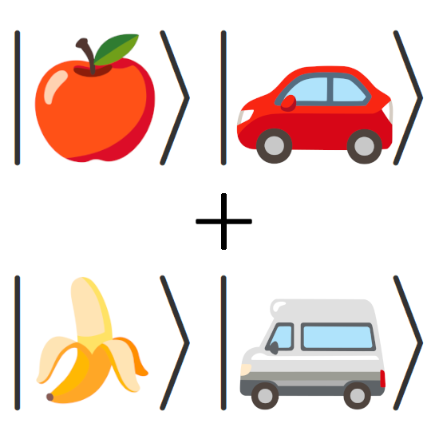
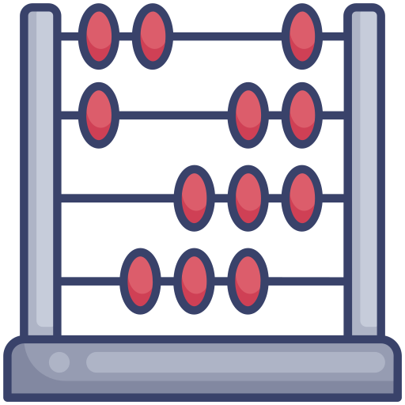
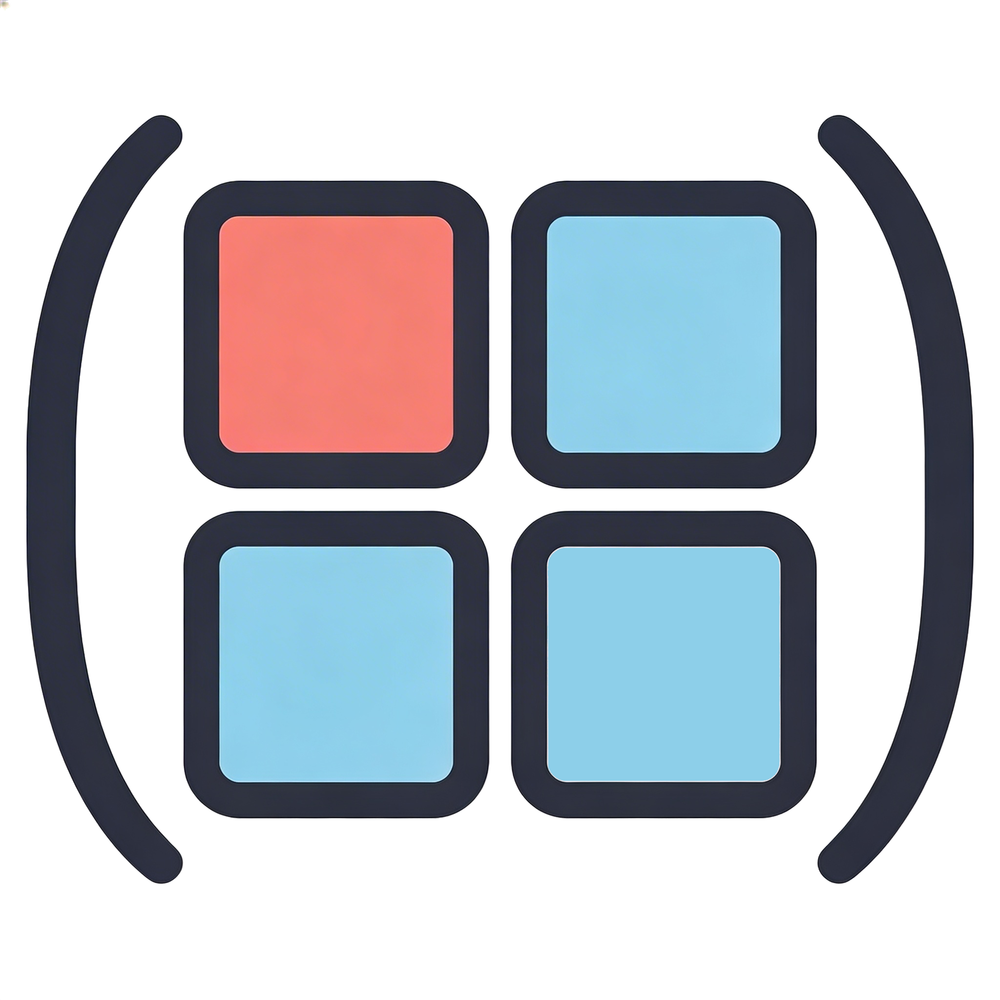
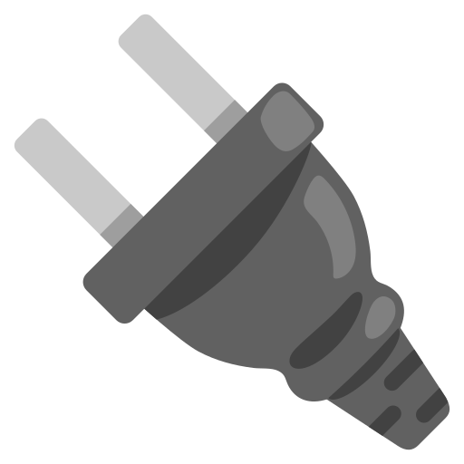
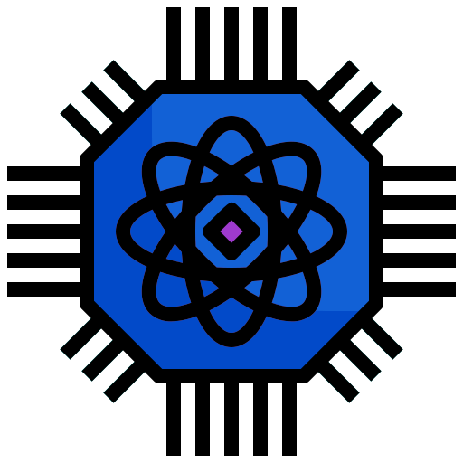
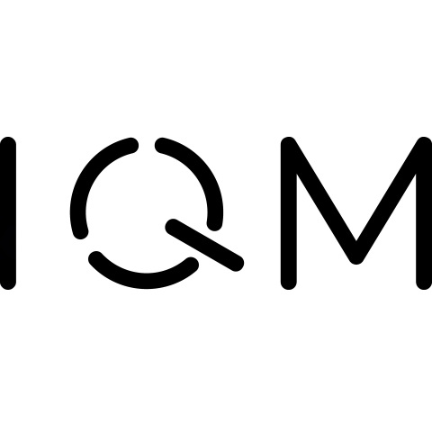

The next generation of quantum
algorithm development
Qrisp is a high-level language for building and compiling quantum algorithms. Its structured programming model supports scalable, maintainable development. With seamless JAX integration, Qrisp enables hybrid real-time algorithm design and analysis.


Key Features#
Powerful features for scalable quantum algorithm engineering

Typed quantum variables
Qrisp algorithms are constituted of variables and functions instead of qubits and circuits, which helps you to structure your code and avoid technical debt.

Jax integration
Exert hybrid real-time algorithm control with Catalyst and Jasp. Qrisp’s JAX integration enables seamless hybrid quantum-classical workflows with deep integration into classical compiler infrastructure (LLVM/MLIR). Learn more →
Modularity
Automated qubit allocation allows separate modules to recycle qubit resources for each other without intertwining the code. This feature facilitates interoperability of code written by respective domain experts.

Arithmetic
A smoothly integrated system of floating point arithmetic streamlines the development of non-trivial applications. Furthermore, a system of types and functions describing modular arithmetic is available.

Block Encodings
Use block encodings as programming abstractions to perform Quantum Linear Algebra using the NumPy-like interface of the BlockEncoding class.

Compatibility
Compilation results are circuit objects, implying they can be run on a variety of hardware providers such as IQM, IBM Quantum, Quantinuum, Rigetti etc. Further circuit processing is possible using circuit optimizers like PyZX.

Simulator
Qrisp ships with a high-performance simulator, that utilizes sparse matrices to store and process quantum states. This allows for the simulation of (some) quantum circuits involving 100+ qubits.
Dive into Qrisp code#
Write quantum algorithms in fewer lines of more readable code
Qrisp enables developers to express quantum algorithms in substantially fewer lines of code compared to gate-level frameworks - without sacrificing readability. Moreover, the compiler leverages the high-level program structure to infer algorithmic properties, enabling compilation optimizations that often yield more efficient circuits than hand-crafted alternatives. The following example illustrates this: both snippets multiply two n-bit integers, the first using Qiskit and the second using Qrisp.
{kind=link}
Beyond simple arithmetic, our Tutorials demonstrates a complete implementation of Shor’s algorithm using Montgomery reduction, fully agnostic to the choice of quantum adder. The implementation manages several distinct QuantumVariables, whose qubits are automatically disentangled and recycled across function calls. This approach significantly reduces resource requirements compared to existing open-source implementations, while remaining accessible and well-documented.
This example demonstrates how high-level quantum programming enables novel, scalable solutions to complex problems - and underscores the role that structured languages will play in the future of quantum computing.
Get Involved#
Interested in contributing to Qrisp? Whether it’s fixing a bug, improving the documentation, or proposing a new feature, contributions of all kinds are welcome. Head over to the Contributing Guide to get started.
Who is behind Qrisp#
Qrisp is an open-source project developed across organizations. We are open to all kinds of contribution - feel free to contact us, if you or your organization intend to contribute.
